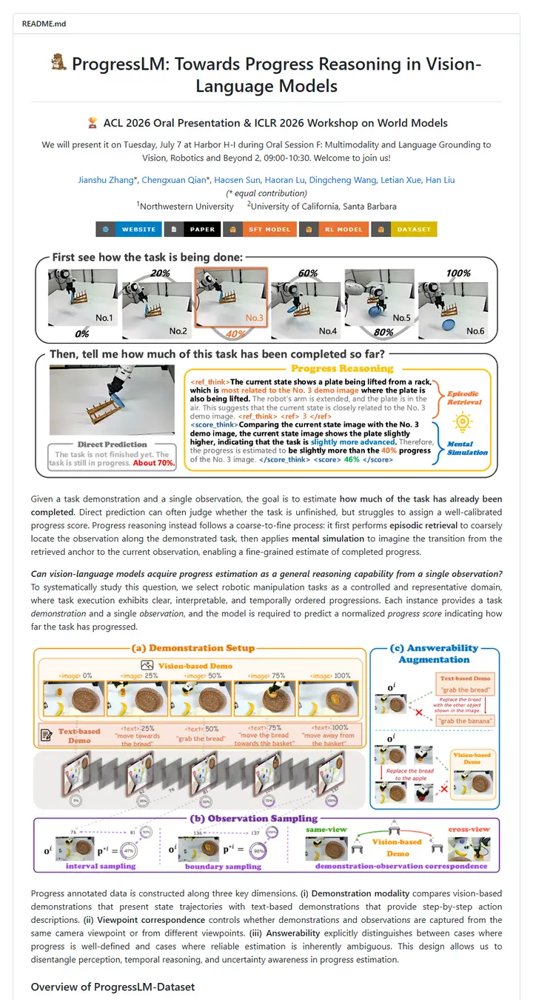

ProgressLM/ProgressLM
A conference poster unrolled down the page: a mascot-stamped title, a gold trophy line with the session time, five bold block-letter tabs, then three full-width figures that carry the argument while justified captions fill the gaps.

Checked against the rendered page. Badge hex values are the fills shields.io serves today (orange #ea7233, yellow #d8b800), which differ from METHOD_README.md's named-color table but match the capture pixels exactly. The README numbers its affiliations but puts no affiliation marks on author names; this is recorded as present-but-unusual.
Why it is here
A presentation banner line and uniform button-style link badges sit over large, high-resolution explanatory figures and a dataset statistics panel, showing how to lead with figures for a figure-heavy paper.
Overview
Header Block
Badge Colors
Section Outline
Guidelines
More like this